node.js · real-time web app · tooling
A live companion for Archipelago multiworld randomizers — personal tool, unaffiliated
Solo Developer · Tools & Systems Programmer · UX/UI Designer
In Archipelago, several games are shuffled into one “multiworld”: the items of your game are hidden in your friends' games, and the other way around. You often play several games at once while waiting for the others' items — and quickly lose track of what to do and where to go.
I designed and built on my own Isle Compass, a real-time web app that connects to the game read-only and answers those questions for all my games in a room: what is doable, what is blocking me, what the others are waiting for — without ever revealing what a check holds.
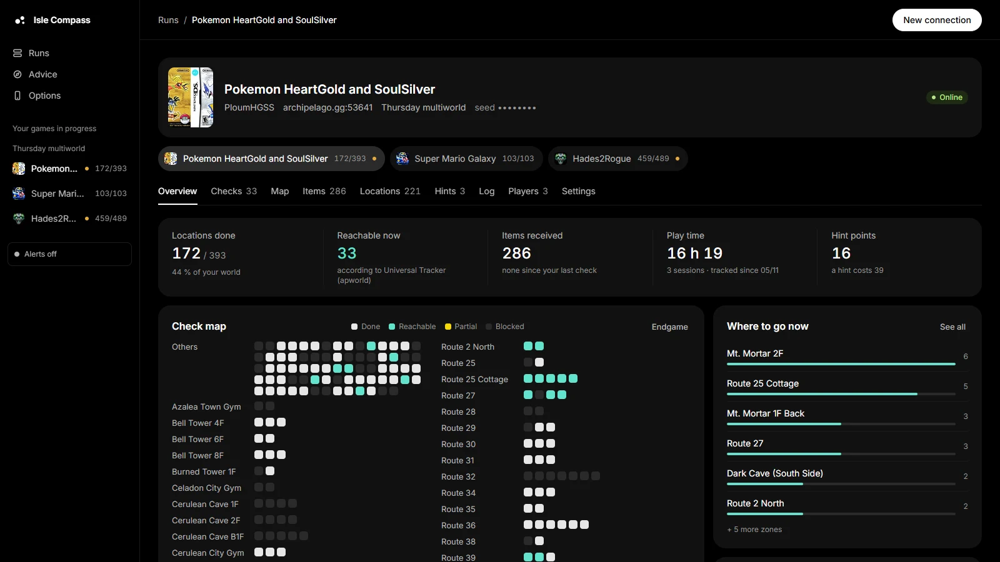
The existing tools each cover part of the need: the Archipelago website's tracker lists checks but doesn't say what is doable; PopTracker draws great maps, but for a single game and knows nothing about the room; the Universal Tracker knows the game's real logic, but as a raw list. When you play three games in the same multiworld, you juggle three windows and a Discord channel.
The goal: one screen for the whole room, bringing together the real logic, a live map and what the other players are doing — with one absolute rule, no spoilers: the app tells you what you're missing, never where it is.
Solo Developer · Tools & Systems Programmer · UX/UI Designer
I did everything end to end: the design, the server, the interface, the security and the tests. The app runs during our real sessions with friends, and every feature came from a need met while playing — then was reworked from feedback.
A Node.js server with zero dependencies does all the heavy lifting; the page only displays the result, updated live.
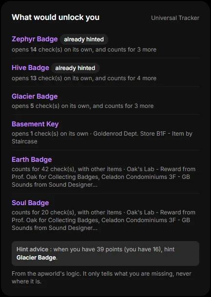
Logic · Universal Tracker
Instead of rewriting each game's logic, the server drives the Universal Tracker headless: it sends it commands and reads its answers, to know which checks are doable and what each of the others is missing.
It then adds up those needs per item: “this item would open 14 checks on its own”. That's what powers the hint advice — which item to ask for when you have enough points — without ever saying where it is.
// ut.mjs — one question at a time, answers delimited by a sentinel command
_ask(lines, timeout = 30000) {
const run = () => new Promise((resolve) => {
if (this.closed || !this.proc) return resolve("");
const sentinel = `zz_fin_${++this.seq}_x`;
this.wait = { from: this.buf.length, sentinel, resolve,
timer: setTimeout(() => { this.wait = null; resolve(null); }, timeout) };
// the question, then an unknown command whose "not found" echo ends the answer
this.proc.stdin.write(lines.map((l) => `${l}\n`).join("") + `/${sentinel}\n`);
});
const p = this.queue.then(run); // questions are queued: never two at once
this.queue = p.catch(() => {});
return p;
}
// ut.mjs — refreshed on every check or item, debounced so UT sees the new items
refresh(delay = 2500) {
clearTimeout(this.timer);
this.timer = setTimeout(async () => {
const out = await this._ask(["/locations_in_logic"]);
if (out === null || this.closed) return;
const ids = [];
for (const line of out.split(/\r?\n/)) {
const id = this.idOf.get(line.trim());
if (id !== undefined) ids.push(id);
}
this.state = { ...this.state, status: "ready", at: Date.now(), inLogic: ids };
this.onUpdate(this.state);
this._explainLocked(new Set(ids)); // then: what each blocked check is missing
}, delay);
}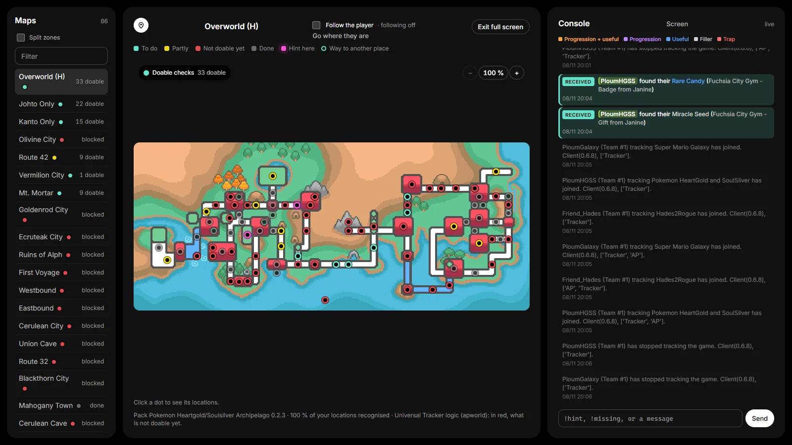
Map · PopTracker packs
The server reads PopTracker packs (maps, locations, positions) and crosses them with the logic: each dot gets its colour — to do, partly, not doable yet, done, hint here. It also works out which map each check belongs to, so a zone is counted only once.
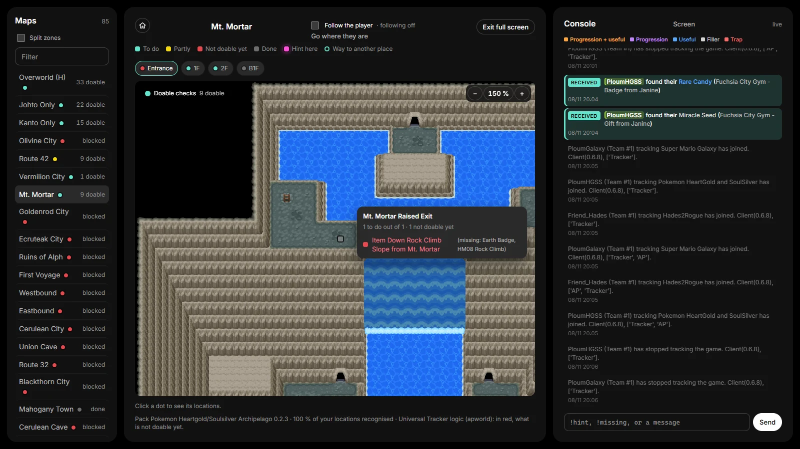
UX · No spoilers
Hovering a dot lists the place's checks and, for the blocked ones, the missing item (“missing: Earth Badge”). It's the information you need to play, without spoiling the surprise.
The same principle guides the whole app: it can say what you need, what an item unlocked, or that a friend is waiting for an item from your world; it never says what a check holds.
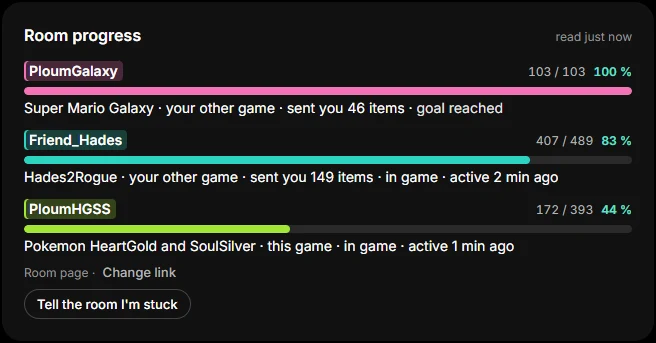
Multiplayer · Alerts
The game protocol only gives the other players' status. By reading the room's public tracker page, the app shows everyone's progress, at most once a minute.
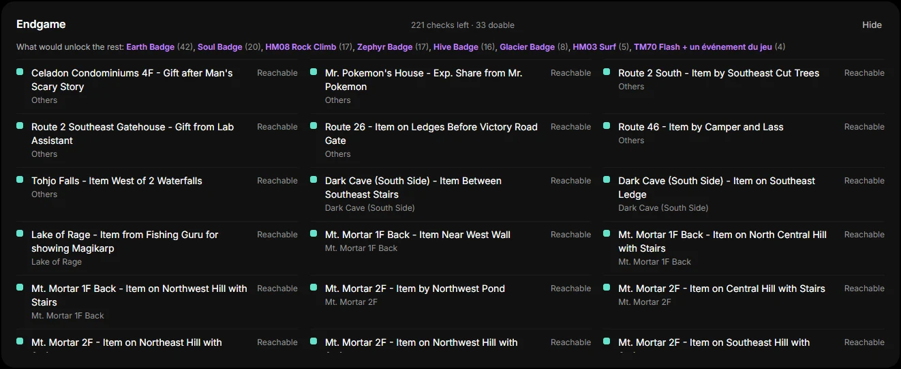
Endgame
When few checks are left, the overview switches to endgame mode: every remaining check, doable ones first, each with what it needs, and at the top the items that would unlock most of the rest.
Security · Audit
While auditing the app, I found a real vulnerability: through “DNS rebinding”, any website open in the browser could pose as the tracker and read the game state, the phone key, even the image of captured windows. I proved it, fixed it, then covered it with automated tests.
// security.mjs — only this PC, and only the tracker's own pages, may use the API
export function trustedRequest(req, url, lanAddresses = []) {
const host = String(req.headers.host || "").toLowerCase();
const name = host.replace(/:\d+$/, "").replace(/^\[|\]$/g, "");
// DNS rebinding: a foreign name pointed at 127.0.0.1 is refused
if (!["localhost", "127.0.0.1", "::1", ...lanAddresses].includes(name)) return false;
if (!url.pathname.startsWith("/api/")) return true; // the page itself: links from anywhere are fine
const site = req.headers["sec-fetch-site"];
if (site && site !== "same-origin" && site !== "none") return false;
const origin = req.headers.origin;
if (origin === "null") return false;
if (origin) { try { if (new URL(origin).host.toLowerCase() !== host) return false; } catch { return false; } }
return true;
}
// security.test.mjs — run with `npm test` (node:test, no library)
test("DNS rebinding: a foreign host name is refused, page and API", () => {
assert.equal(ok(...req("/api/lan", { host: "attacker.example:8787" })), false);
assert.equal(ok(...req("/", { host: "attacker.example:8787" })), false);
});
test("other sites cannot use the API", () => {
assert.equal(ok(...req("/api/runs", { "sec-fetch-site": "cross-site" })), false);
assert.equal(ok(...req("/api/lan", { origin: "https://evil.example" })), false);
});Beyond the map, the app supports everything else in a session: choosing what to launch, talking to the room, knowing what you received — and even picking your next game.
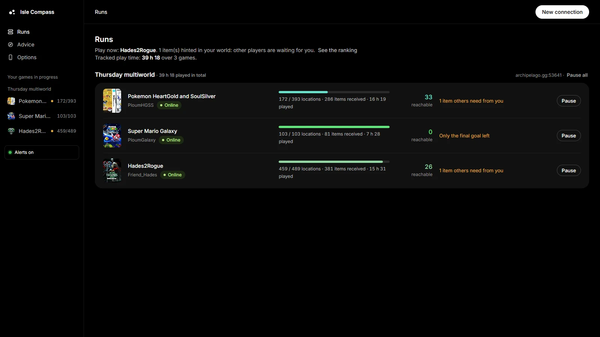
Multi-game · Play time
When you play several slots in the same multiworld, they are grouped by room, and the app tells you which one to launch now: the one where other players are waiting for you, where you received something new, or that is close to the end.
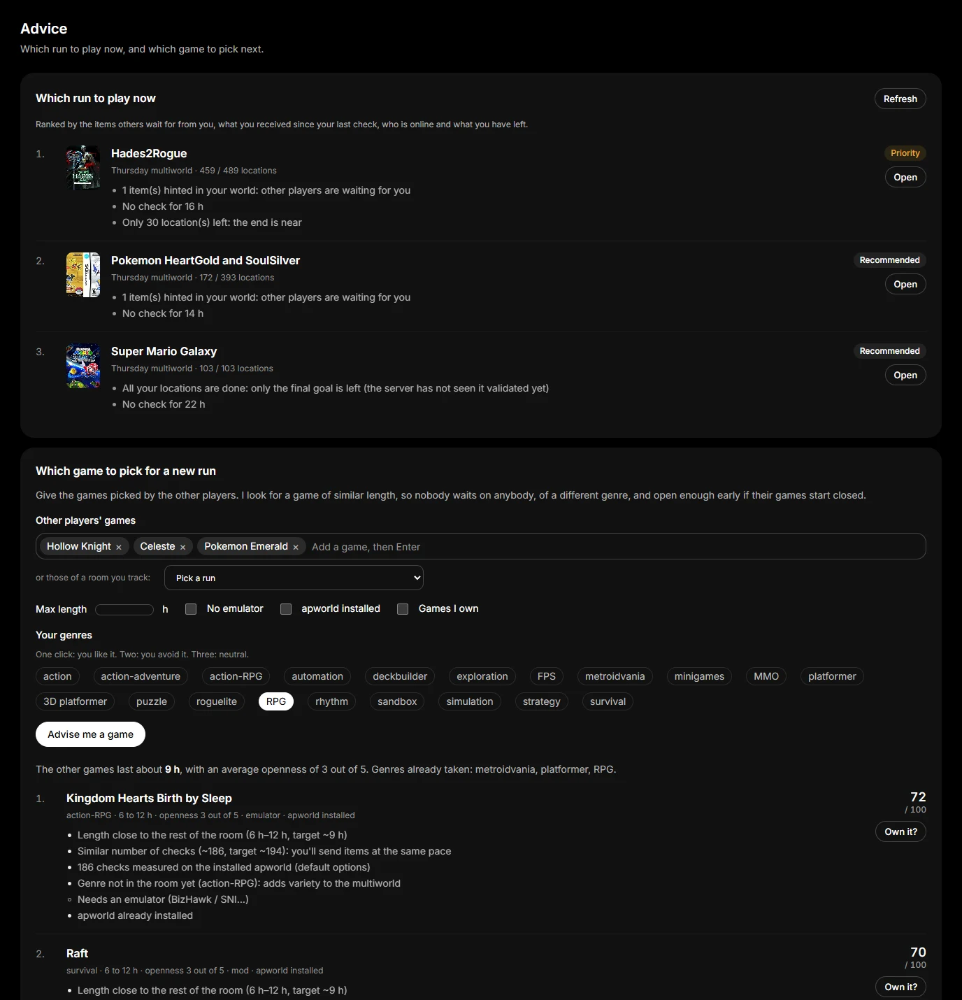
Advice · Data
Even before a multiworld starts, the app suggests a game (or a bundle of 2–3 games) whose length and number of checks match the other players', of a different genre, and open enough early on if their games start closed.
The number of checks isn't guessed: the app generates a real one-player game with each installed apworld and counts the placed items. It also cross-references the community list of about 880 Archipelago games.
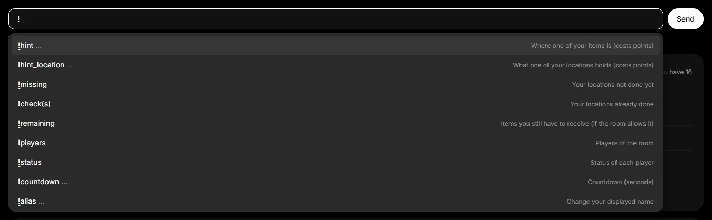
Commands · Autocompletion
The command bar replaces Archipelago's text client: !hint, !missing, chat… with autocompletion of commands, item names and locations, history with the arrow keys, and a confirmation before irreversible commands.
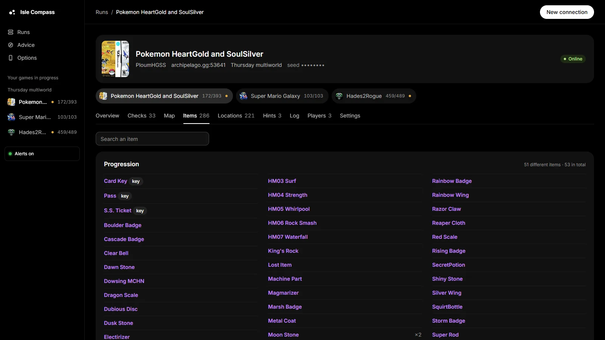
Items · Readability
Everywhere in the app, an item wears the colour of its Archipelago type (progression, useful, filler, trap), the same for every game in the room; each player keeps their own colour too. On hover, the app tells how many checks were stuck behind an item.
The rest of the features, in pictures.
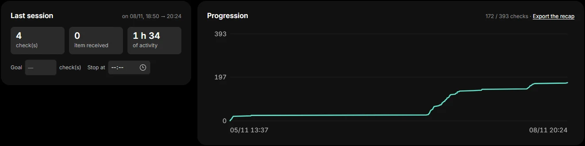
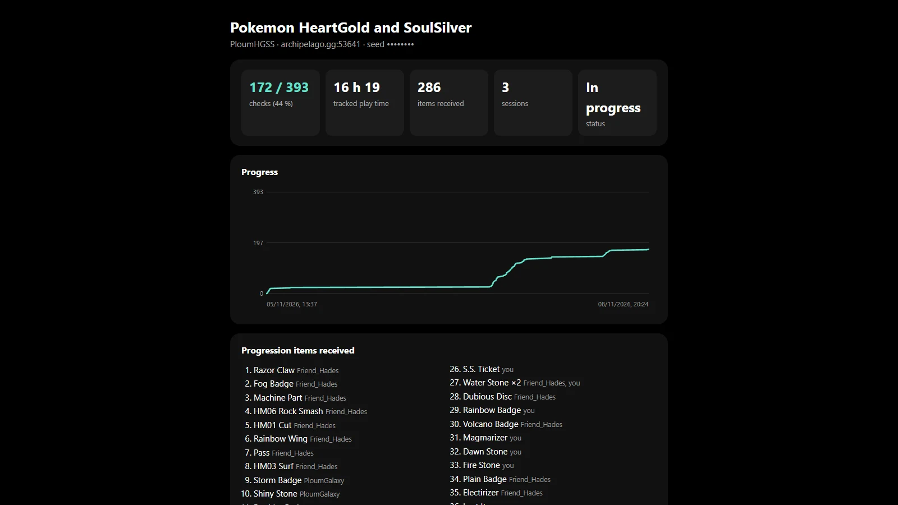
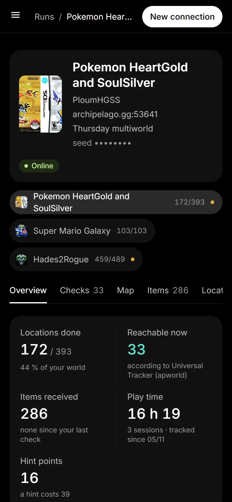
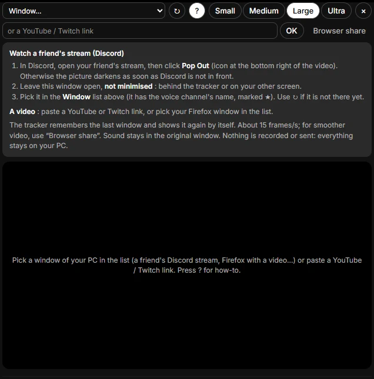
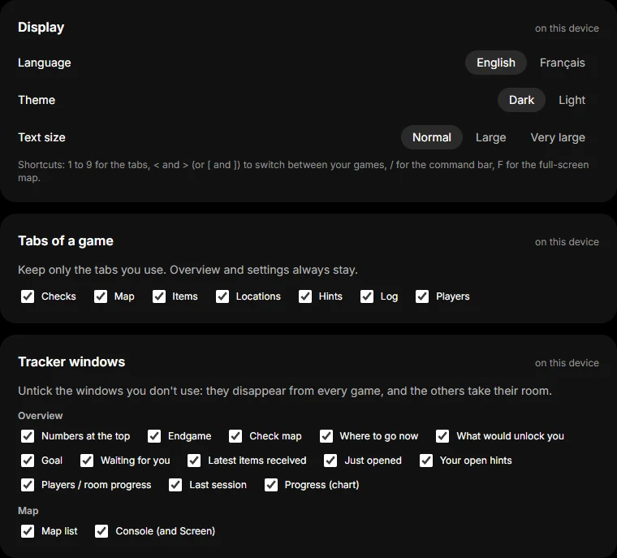
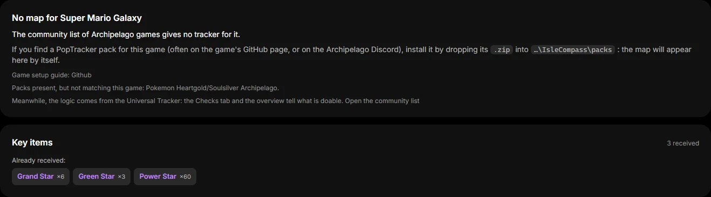
A few decisions that shaped the project, and what they taught me.
Every screen was designed to help without revealing: needs, yes; what checks hold, never.
The tracker connects as a mere observer: it sends no check and cannot harm a game.
Node.js only, no npm packages nor build step: a friend runs start.bat and that's it.
WebSocket to the room, Server-Sent Events to the page: everything updates without reloading.
Wi-Fi access with a secret key; by default, the phone can look but cannot send anything to the room.
A 1,900-line file split into 12 modules, dead code removed, and automated tests on security and translation.
It's a personal tool, used during our sessions with friends. I'd be happy to show it to you in a demo.